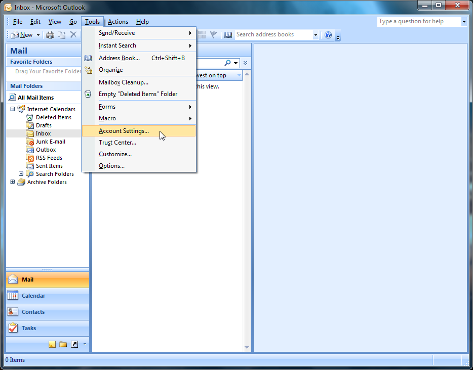
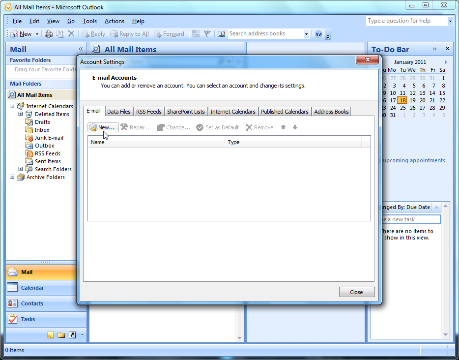
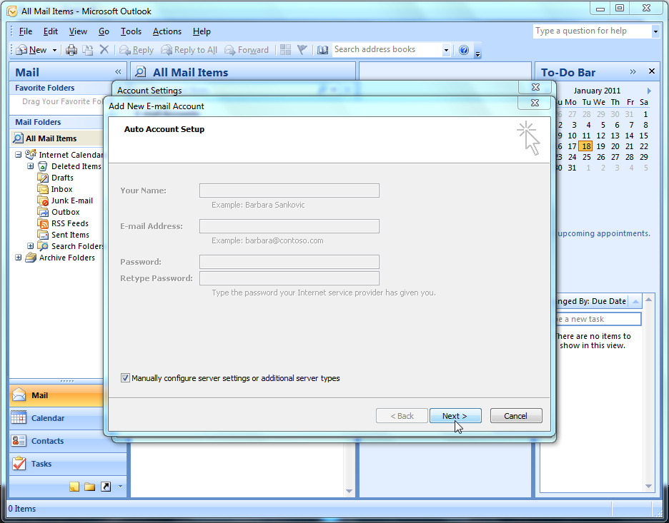
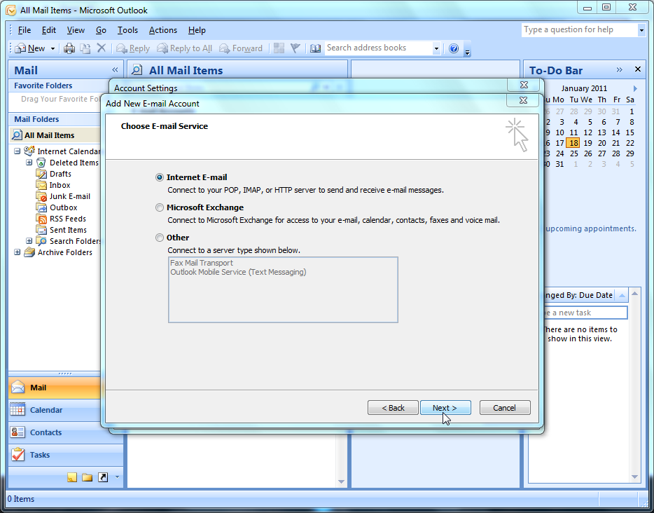
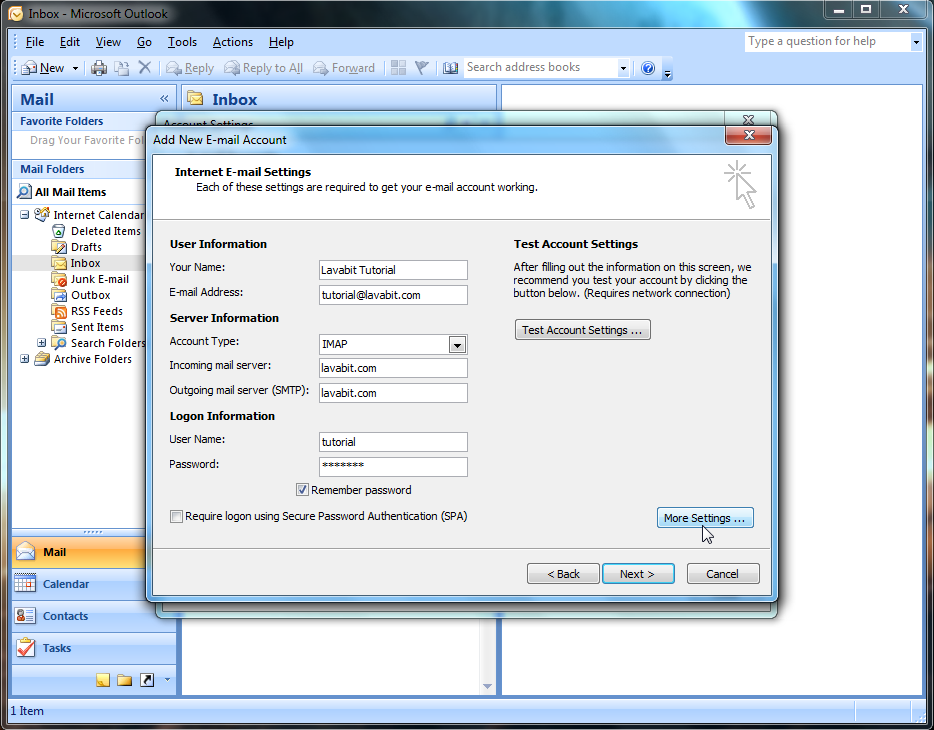
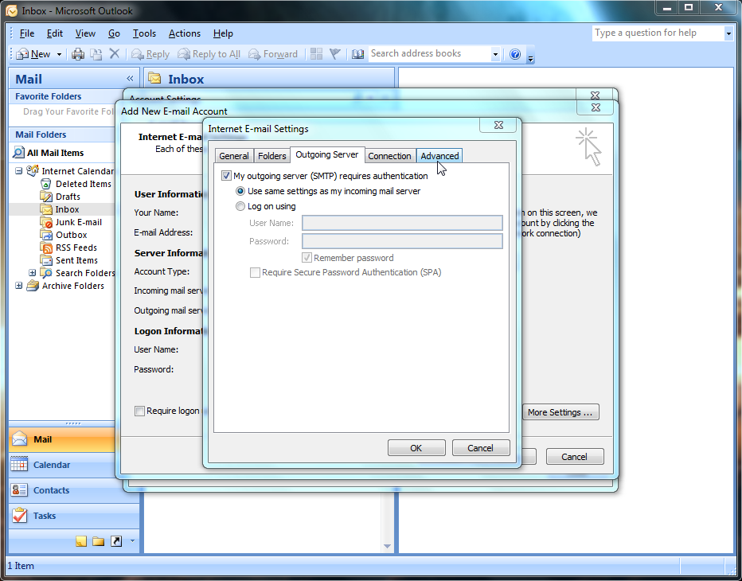
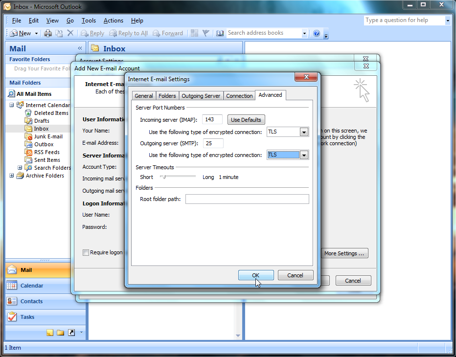
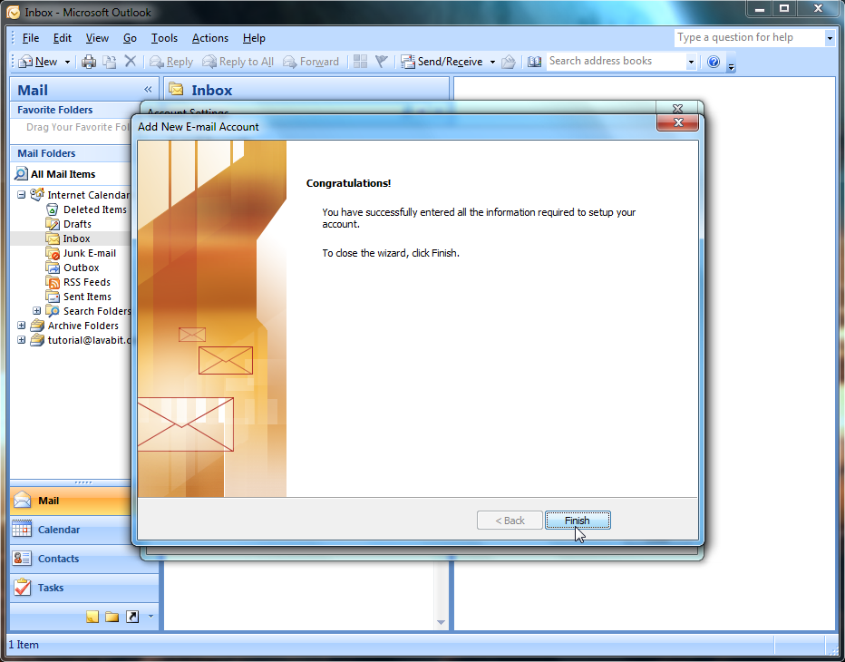
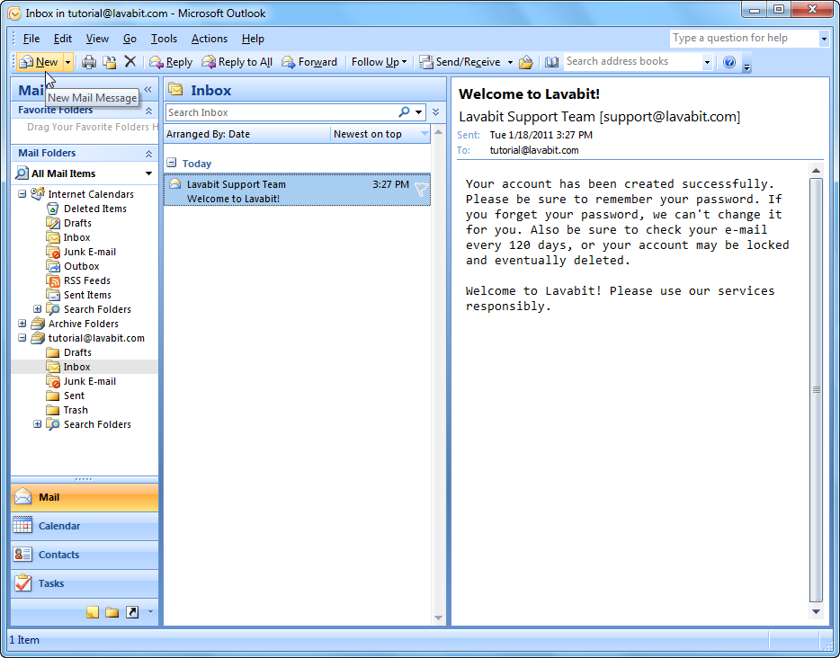

Outlook Tutorial
This short tutorial will show you how to configure Outlook 2007 for use with $Provider. If you continue having difficulty after following this tutorial, please check our troubleshooting page for solutions to the most common problems. And if all else fails, please use our contact page to get in touch with the $Provider Support Team.
Step One
To add a new e-mail account in Outlook, select the ‘Tools’ menu and then the ‘Account Settings' option. If 'Account Settings' does not appear, make sure you do not have a previously created account selected. Click on 'All Mail Items' on the left then open the 'Tools' menu.
If you’re starting Outlook for the first time, you’ll be prompted to add an e-mail account. If this is the case, select ‘Yes’ and then press the ‘Next’ button. You’ll then skip to Step Three in this tutorial.
Step Two
Select the 'E-mail' tab then click 'New'.
Step Three
Click the check box to manually configure the account then click 'Next'.
Step Four
Choose 'Internet E-mail' and click 'Next'.
Step Five
In the 'Your Name' field, enter the name you would like to have displayed to your recipients. You will most likely use your full name but you are free to enter anything you wish such as your company name or a short description of the account if it serves a special purpose. Enter your $Provider e-mail address in the next field.
Select IMAP for the account type. IMAP has the benefit of leaving your messages on the server intact so that you can sync your mail with multiple computers or devices. Next, enter '$Provider.com' for the incoming and outgoing mail servers.
Your 'User Name' is everything that precedes @$Provider.com in your email address. Be sure to use lower case letters and enter it exactly as it appears in your e-mail address. After you fill in your password, you can check the 'Remember password' box to have Outlook store your password. If you do, be sure to write your password down and store it in a safe place in case you lose your account information for any reason. If you leave it unchecked, Outlook will prompt you for the password everytime you send or receive email.
Leave the 'Secure Password Authentication' checkbox blank. This is a Microsoft implementation that only works with Microsoft related e-mail accounts. Instead of clicking 'Next', go ahead and choose 'More Settings' then move on to Step Six.
Step Six
First, click on the 'Outgoing Server' tab and check the box to require authentication for the outgoing server. Use the same settings as your incoming mail server. Then select the 'Advanced' tab.
Step Seven
Choose TLS for both the incoming and outgoing encryption types. TLS offers the same security as SSL and works on the default ports of 143 for IMAP and 25 for SMTP. Click 'Ok' to close the settings menu and click 'Next' to continue the new e-mail wizard.
Step Eight
You're all setup. Click 'Finish' to close the wizard. If you created the account from the 'Account Settings' menu, go ahead and close it.
Step Nine
You should see a message from the $Provider Support Team in your Inbox. You can also try sending an e-mail to make sure your outgoing mail works as well.
For most users, this is the happy ending to the story. If you hit a snag, please check our troubleshooting page for solutions to the most common problems. Of course, if you’re still stuck, please use our contact page to get help from the $Provider Support Team.